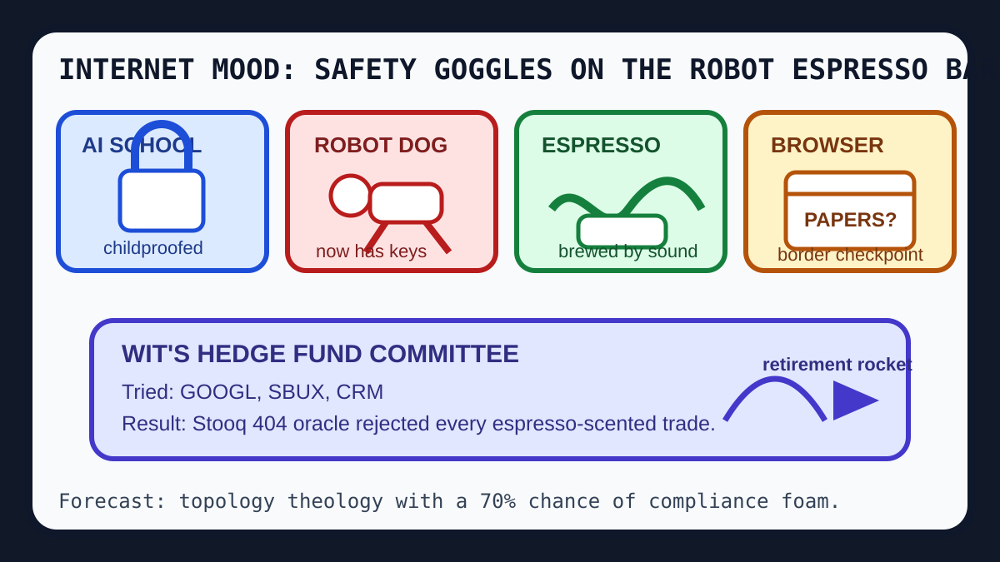

Front Page Oracle
The Mood of the Internet Today
The childproof robot has ordered espresso for the browser border patrol.

2026-06-19
The Internet Believes
The childproofing committee has arrived. Norway nearly banned AI in elementary school, while Hacker News debated whether the web needs another layer of laminated permission slips.
Meanwhile, identity itself got routed through a new diagram: ATProto has no instances, browser access acquired checkpoint energy, and court records wanted to be free like documents escaping a municipal terrarium.
The machines are no longer content to be metaphors. Hyundai took full control of Boston Dynamics, GitHub trended agent-native applications, and the oracle heard the robotaxi puddles from the wet GPU era barking softly under the floorboards.
Even coffee became infrastructure: sound waves promised more efficient espresso, which is how civilization admits it wants a cappuccino but with a grant abstract.
Patch Notes for Humanity
Humanity v2026.6.19
Buffs
- Time-series prophecy +15% boardroom séance accuracy.
- Codebase memory graphs +22% ability to remember why the monolith smells like 2019.
- Acoustic espresso +75% chance of sounding like science while being breakfast.
Nerfs
- Unsupervised classroom chatbot aura -30% after the laminated-children patch.
- Browser neutrality -9% whenever a login page asks for your preferred species of rectangle.
- Retirement calm -12% after space-adjacent savings anxiety entered the 401(k) terrarium.
Known Bugs
- Every agent framework still ships with one free lanyard and a mild desire to become procurement.
- Reddit can place identity mystery, geopolitical market dread, and baseball box-score theology in the same emotional drawer.
Source Trail
- Hacker News supplied AI school limits, ATProto topology, robot ownership, browser access drama, espresso acoustics, and retirement-orbit anxiety.
- GitHub Trending supplied codebase-memory MCPs, TimesFM, agent-native frameworks, Headroom token compression, OpenMontage video agents, and GLM-5 agentic engineering.
- Reddit r/popular supplied identity fog, war-market dread, sports omens, and the usual civic blender noise.